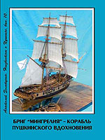
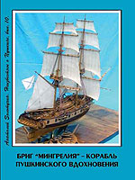

The NEWS 2011:
1. On December, 16th, 2011 - 90 years to the honored artist of Georgia, the honourable citizen of city of Nikolaev, the honorary member of Pushkin club, the veteran of war and work, Nikolay Alekseevich Troyanov were executed! On December, 13th A.Zolotuhina's articles « Troyanov's road Appia » in the newspaper « Evening Nikolaev » and « Nikolay Troyanov's Theatrical experiment!» have been published. In « Southern truth ». On December, 16th in a hall of the House of culture of builders of the Maestro has shown prime-minister of the new performance "Christina" in performance of actors of National drama theatre, over which he supervises 49-th year, after which to Troyanov representatives regional welcomed, city and regional administrations, and also the public of city. Reviews of performance are published in newspapers « New Nikolaev newspaper » 51 (817), « Evening Nikolaev » and « Southern truth ». Session of the Pushkin club, devoted N.A.Troyanov's to 90 anniversary on which congratulations of pupils of the Maestro have been read, including, and from the honored artist of Ukraine Djemal Vadakariya on December, 25th took place. Anniversary evening passed in a hall 3 regional art museums by name V.V. Vereshchagign. On session the presentation of a breadboard model of the new book of N.Trojanov " Appiy's Road " took place and the part of performance "Christina" is shown.


2. On December, 18th, 2011 creative evening of writer Anatoliy Malyarov in which Valeriy Falev, Tatyana Danilenko and Leonid Rzhepetsky took place. Composer Elina it is exemplary has executed three products, from them two new songs on A.Stepanenko's words, vocal support of duet Sergey Filatov and Alexandra Shara.


3. On November, 27th, 2011. The literary evening, devoted to the 75 anniversary of our fellow countryman, an outstanding poet, the actor, the film director, the public figure, the winner of the State premium by name Ò.G. Shevchenko, of Ìykola Vingranovskiy. Evening was conducted by Dr. Phil., Taras Kremin'. The national artist of Ukraine, winner Shevchenkovskoj of the premium, Andriy Antonyuk and the spouse of poet Emil' Janvarev, Lyudmila Kostyuk have taken part in session. At session of club the decision to address to regional and Pervomaysk to authorities about assignment of name Mykola Vingranovs'kiy of one of street in a Pervomaysk where he was born is accepted and has grown.
4. In Irina Gudym’s publishing house two brochures of release « Unknown about Pushkin » are published by A.I.Zolotukhin: Issue 9. « Pushkin and Knorre » - it is brief about it read in same article of the author; Issue 10. “Brig “ Mingrelia “ – the ship of Pushkin inspiration”. In Issue 10 it is told about the first military ship on which Pushkin at night with 15 for August, 16th, 1820 together with family of general N.N.Raevskiy has crossed from Feodosiya to Gurzuf. The second meeting with a brig “Mingrelia” took place in Odessa from September, 15 till September, 25th, 1823. And the third – in Nikolaev on October, 6-8th, 1823, during secret arrival of the poet here from Odessa on a yacht “Joy”.
 

5. On November, 22th, 2011 to V.I. Dahl's are executed 210 years from birthday, which longest veins in Nikolaev. It is possible to speak, that he here has arisen spiritually.
Memorial board VI Dahl, City Council set November 22, 2001 Author - sculptor A.A. Kovalchuk, architect - O.P. Popov, historical information - A.I. Zolotukhin.
6. On November, 4.17th, 2011 in an assembly hall of Regional scientific library by name Gmyrev the first meeting of the editor-in-chief took place, perhaps, the most intellectual in Ukraine, newspapers “Day”. Larissa Ivshina met with readers of the newspaper and students of Nikolaev. The full videoreport on this major event in a cultural life of city look on YouTube in 3 parts. Taking an opportunity, to A.I.Zolotukhin have been transmitted for library of the newspaper “Day” of the book: T.K. Peresun’ko “ Gogol. Apostolic service of soul “; A.I.Zolotukhin “The Secrets of “ Slovo o polku Igoreve “; A.I.Zolotukhin “Exzampey”; A.I.Zolotukhin, Issue. 9 and 10 “ Unknown about Pushkin “; A.I. Zolotukhin. “ Homer. The immanent biography “.
7. In Irina Gudym’s publishing house there was a book of the Honorary member of Pushkin club, the professor, Tamara Konstantinovnà Peresun’ko « Gogol. Apostolic service of soul » (336 p., Nikolaev, 2011). In the book attempt to present Apostolic service of soul of the ingenious writer in the mosaic form is made. The book consists of 28 evangeli-cal sections and 397 miniatures.In Irina Gudym’s publishing house there was a book of the Honorary member of Pushkin club, the professor, Tamara Konstantinovnà Peresun’ko « Gogol. Apostolic service of soul » (336 p., Nikolaev, 2011). In the book attempt to present Apostolic service of soul of the ingenious writer in the mosaic form is made. The book consists of 28 evangeli-cal sections and 397 miniatures.
8. On October, 23rd, 2011 the musical concert took place in Pushkin club, devoted to creativity of the teacher of Children's musical school (CMS) ¹ 2, to the composer, Elina Obraztsova. At a concert 28 products of the author have been executed. Teachers CMS ¹ 5 have taken part in a concert also: Zoya Shirokova - a violin and Sergey Ponomarev - saxophone. From CMS ¹ 2 in a concert following teachers and pupils (former and present) have taken part: the Liliya Shevchuk, Olga Lisnevskaja, Alina Seletskaja, Alena Tanasevskaja, Valeriya Mudraja, Alexandra Shara, Helena Romanova, Anna Silkina, Anna Osipjan, Sergey Filatov, Irina Sadovaja both children's ensemble Alina Dovganjuk and Kira Knignikova. Concert of Elina Obraztsova is presented on YouTube in 4 parts.
9. Opening 23-rd season by general meeting of Pushkin club on which the Program of work for 2011- 2012 has been accepted on September, 25th, 2011 took place. Then creative evening of the poet, the winner of the State premium by name Ò.G. Shevchenko, the Honorary member of Pushkin club, of Dmitro Kremin'. Evening was conducted by the son of the poet, Cand.Phil.Sci., Taras Kremin'. Opening 23 seasons of work of Pushkin club and creative evening is presented to D. Kremin' on YouTube in 3 parts.


10. On June, 6th, 2011 the Pushkin club has noted 212 anniversary from the date of Alexander Sergeevich Pushkin's birth. At 11 o'clock flowers at a memorial board, and at 12 o'clock - at a monument to the Poet have been assigned. At a memorial board the meeting with the national artist of Ukraine Andrey Antonjuk took place. At a meeting at a monument members of club read Pushkin's verses and the verses one's member, and so bard Vitaly Panchenko has sung the songs. Look HERE the videoreport on a meeting at a memorial board, and - at a monument to Pushkin..


11. On May, 22nd, 2011 final session of 22-nd season took place in Pushkin club. Evening has been devoted to creativity of director of the V.V.Vereschagin regional art museum, the deserved art worker of Ukraine, a member of the National union of artists of Ukraine, the candidate of art criticism, the senior lecturer, the Townspeople of year in a nomination "Culture" (2000), the winner of the N.N.Arkasa premium (2004), the vice-president of Pushkin club, of Sergey Nikolaevich Rosljakov. Evening was conducted with Lydia Odegova, music underneath of the musicologist, the candidate of sciences, Olga Petrenko. Look the videoreport on the last evening «Any talent uncognize».


12. April, 24th the session devoted of the most ancient history of the Nikolaev area of Ukraine took place in Pushkin club, since times of Tripol’skaya cultures. Evening was conducted by Svetlana Vasil’evna Boychuk, the regional specialist, the bibliophil, the author of several books on study of local lore - see YouTube. In conclusion of evening A. Zolotukhin has told about new historical data about the Christ.
13. On March, 27th the Pushkin club has noted day of the World poetry and honour memory minute of silence of the left poets of Valery Boychenko (1941-2011) and Jacob Tublin (1935-2011). Evening has opened children's theatre of a word «Present of the sky» over which Victor Nikolaevich Smirnov supervises. In performance of theatre the composition «In the beginning has sounded was the Word» (see video!). At evening poets with reading the products have acted: Arcady Surov; Valentina Mitina with son Evgeniy; Darina Berezina; Jury Grosman; Majya Zherikhina; Nikolay Filimonov; Leonid Shifrin; Larissa Bovduy; Lyudmila Chichkan'; Natalia Nagornyak. Vasily Vasilevich Zorin (university of culture) on a piano has executed product Debussy "Moonlight". In conclusion of evening Valery Falev read a poem devoted by a musical drawing room of the Art museum by name V.V.Vereschagin in whom take place sessions of Pushkin club.
14. On February, 27th, 2011 creative evening of Nikolaev city youth national amateur theatre "STUC" (Student's Theatre of University of Culture) took place in Pushkin club. L.I. Odegova has presented the art director of theatre "STUC", the winner of the premium of the Cabinet of Ukraine, Svistun Artem Alexandrovich. Evening was conducted the teacher of theatre "STUC" by Christina Spiridonova. At evening verses in Lyudmila Ospadovoa execution, Ekaterina Volina separately, and also together with Igor Malinovskiy and Boris Grednenv have sounded. Two songs "Mum" and « the Ukrainian pot-pourris » Maria Pavlishina has executed owner Grand prix of competition «Step to star». Show-ballet (head Ekaterina Ohrimenko) of theatre "STUC" has executed two compositions: «Elements» and "Masks". In conclusion of evening the art director "STUC" Artem Svistun and the foundress of Pushkin club Anna Petrovna Demjanenko has acted. On behalf of members of Pushkin club of participants of theatre "STUC" chairman A. Zolotukhin and secretar N. Nagornjak thanked.
15. On February, 16th, 2011 80 years from the date of a birth of an outstanding spiritual figure of Russian abroad, the publisher of magazine « Bulletin of Russian Christian movement » are executed, to Nikita Alekseevich Struve. The Nikolaev Pushkin club congratulates of jubiler and wishes him long years of a life and creative inspiration for the blessing of Russian culture all over the world!
Read article of our fellow countryman Michael Buznik "the Secant force of conscience", N.A.Struve devoted to anniversary!
16. In 2011 under the decision of UNESCO the world community should celebrate the 1000 anniversary from the date of the basis of sacred Sofia Kiev. But, this important event for us is saddened developed in the past to year by discussion, mainly, between two recognized and dear scientific authorities, on the one hand academician NAS of Ukraine P.P. Tolochko, and with another - the doctor of the historical sciences, managing a department of scientifically-historical researches of National reserve « Sofia Kiev » N.N. Nikitenko. Discussion was beyond narrowly scientific disputes and has poured out in different sorts of the reference to the public on pages of newspapers « New », « the Left coast », « the Mirror of week », « Day », « 2000 » and in a number of the Internet of editions. Moreover, dispute has left on the international level and business is has reached even the reference in UNESCO with the request to cancel celebrating. Read further on a site article «A word about the 1000 anniversary of sacred Sofia Kiev» by A. Zolotukhin.
17. On January, 23rd, 2011 evening of personal creativity of members of Pushkin club took place. With reading the poems at evening have acted: Michael Kovalevsky, Larissa Bovduj, Jury Olejnik, Ekaterina Smerkis, Nadezhda Shcedrova, Nikolay Filimonov, Maya Zherikhina, Leonid Shifrin, Valery Falev, Stalin Gancho, Svetlana Mezina, Lyudmila Haskhachikh, Natalia Nagornjak. As the composer has acted with performance of the products on a piano, the teacher of Children's musical school ¹2, the winner of the International competition of composers «Pentanton» 2009 and 2010, Elina Obraztcova. She had been rendition two products from a cycle « Conversation with great » « Memoirs on the past » - dedication to Musorgsky and "Prelude" - dedication to Skryabin, and also plays: "Dawn", « Gardens under a rain », "Meeting" and "Memoirs". Members of club have warmly met a debut of the talented composer and the executor in Pushkin club.